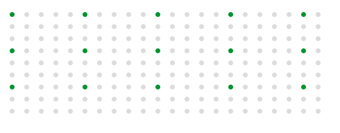
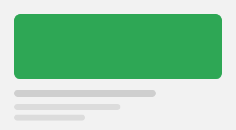
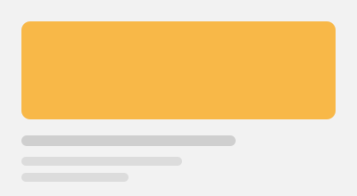
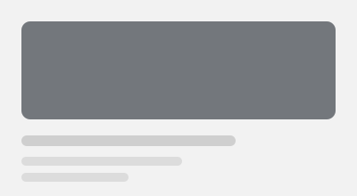

Automatiza con WhatsApp
Es el software de marketing por WhatsApp con chatbot incluido: automatiza la respuesta automáticamente, multiplica tus clientes y envía mensajes sin pagar por cada uno.
Configura tu cuenta en una tarde: carga tu lista y envía una imagen o varias imágenes con la información de tu producto. La respuesta es inmediata y sin límite de envíos, sin caminos alternativos ni nada que instalar. Lo usan negocios de Colombia, España y México; hasta el CEO de una empresa de cinco personas lo configuró solo. Las respuestas en auto se encargan del resto.
La compra de la licencia es de una sola vez y el ahorro frente a pagar por mensaje es amplio: quien ya lo ha adquirido en su primer mes ahorra el equivalente a tres campañas. Con la adquisición tienes soporte y actualizaciones incluidas.

Nos encontramos presentes en más de 20 países
Equipos comerciales de medio mundo usan WhatsOn para atender a sus clientes por WhatsApp. Tu cuenta funciona igual estés donde estés: la misma lista, el mismo panel y los mismos informes.
Soporte en español, de lunes a viernes. En Europa la factura se emite en euros; en América, en dólares.


¿Por qué WhatsOn?
Porque el 90 % de tus clientes ya está en WhatsApp y no quiere instalar nada nuevo. Con WhatsOn el marketing deja de ser un boletín que nadie lee y pasa a ser una conversación.
- Envíos masivos sin coste por mensaje.
- Respuestas automáticas cuando no puedes atender.
- Etiquetas y embudos para saber en qué punto está cada cliente.
- Reportes de entregas, lecturas y bajas.
Con una lista corta ya se ve el resultado: el panel analiza qué plantilla contesta más gente.
Envíos ilimitados
Whatsapp Chatbot
Responde dudas, toma pedidos y pasa a una persona cuando la conversación lo pide.
La herramienta de marketing digital basada en Whatsapp que
te ayudará a vender más.
Organiza contactos, prepara la campaña, decide la audiencia y lanza. El panel te dice qué pasó con cada mensaje y qué clientes respondieron. Si prefieres ideas antes de escribir, ChatGPT redacta las variantes y WhatsON las envía, las reparte en el tiempo y mide qué contestó cada cliente: juntas resuelven lo que cada una no hace sola.
Sin contratos largos ni permanencia. La plataforma se conecta con Dialogflow para las respuestas automáticas y con su API para lo demás.
Vídeo Masterclass
La estrategia de envíos explicada paso a paso.
Grupo VIP Whatsapp
Soporte directo con el equipo y con otros negocios.
Únete a los cientos de emprendedores que multiplican sus ventas con WhatsOn
Tres formas de sacar partido desde el primer día, las mismas que aconsejan quienes ya venden con WhatsOn.
Más respuestas
Un mensaje con nombre y contexto recibe respuesta; una lista genérica, no. Todos tus envíos leídos con la misma plantilla se ignoran igual.
Menos tiempo
El chatbot contesta lo repetido y tu equipo solo entra en lo que importa. Un tipo de mensaje por objetivo: avisar, vender y recordar son conversaciones distintas.
Todo medido
Cada campaña deja su reporte de envíos, así sabes qué se ha vendido y qué se puede mejorar. Actualizar esas cifras cada semana ajusta los activadores de las respuestas automáticas.
Un horario adecuado
Los 30 minutos después de la respuesta de un cliente son los que más convierten. Actualmente el horario adecuado lo marca la conversación, no la agenda del equipo comercial.
Cuentas adicionales solo cuando hacen falta
El servicio funciona con personas que aceptaron recibir tus mensajes: trabaja con listas propias. Las cuentas adicionales se añaden cuando el volumen lo pide, y el aprendizaje de cada campaña se queda en el panel.
Ver los planes Pedir una demo Leer las preguntas Abrir el panel
Evita el bloqueo de Whatsapp
Los envíos se reparten en el tiempo, con pausas y un límite por cuenta. Si un número falla se aparta antes de que arrastre al resto.
La lista de bajas se respeta siempre: quien pide no recibir más, no vuelve a recibir. Con el asesoramiento del equipo puedes aumentar el volumen sin arriesgar el número; la asistencia es por WhatsApp y por correo.
Compra Whats On hoy y recibe gratis 2 bonos con la estrategia infalible Whatsapp Marketing y nuestro Grupo VIP Whatsapp
Vídeo Masterclass
Cómo preparar la primera campaña sin equivocarte con la audiencia ni con los tiempos: descargable, en vídeo y sin caducidad.
Grupo VIP Whatsapp
Un grupo privado para resolver dudas con el equipo y con otros negocios que ya envían, con ejemplos de campañas ilimitadas vía WhatsApp.
La alianza perfecta
WhatsApp más inteligencia artificial
Durante todo el proceso no tienes que escribir nada: personaliza la plantilla una vez y el sistema redacta cada mensaje con el tono de tu negocio. Con ningún conocimiento técnico puedes enviar a 100 contactos o a toda tu lista, directamente desde el panel, y ver el aviso de cada envío en la pantalla de reportes.
Es una forma amplia de trabajar: nuevas campañas en minutos, avisos automáticos cuando alguien responde y un resumen diario con lo que ha funcionado. Los avisos de bajas y de errores llegan al mismo buzón, así que no se pierde nada.
- Personaliza el mensaje con variables: nombre, ciudad, último pedido.
- Envía por lotes y para cuando quieras, sin perder el punto de envío.
- Carga la lista de contactos en CSV.
- Elige el plan y la plantilla, y lanza la campaña.
Ver los planes Pedir una demo Leer las preguntas Abrir el panel
Algunas de las miles de empresas que confían en WhatsOn
Preguntas Frecuentes
Las cuatro dudas que más nos llegan antes de contratar.
Consigue tu licencia Ahora!!
Entérate de lo último

Tendencias de Marketing Digital para 2025
Cómo cambia la conversación y qué hacer con tus envíos este año.
Leer más
La automatización de comunicaciones masivas en WhatsApp
Tendencia y proyecciones: qué esperar de los envíos masivos.
Leer más
Mejora campañas de WhatsApp con ChatGPT
Variantes de mensaje sin perder el tono de tu negocio.
Leer más
Algunas empresas de Chile y de México nos escriben cada semana para contarnos cómo les ayudan los envíos masivos: campos personalizados, mensajes cautivadores y un blog con ideas para vender más. Estamos comprometidos con unos compromisos claros y sin letra pequeña: puedes darte de baja con un click, leer el cco de cada campaña y hablar con nuestro equipo de comunicación cuando lo necesites, como hacemos con todos.
Ver los planes Pedir una demo Leer las preguntas Abrir el panel
Si quieres contactar con nosotros puedes comunicarte por el chat del panel o por correo, y contestamos el mismo día: escríbenos para comunicarnos cualquier incidencia y te conecten con quien lo resuelve. Nuestro equipo creativo crea los textos de cada campaña y revisa contigo la contratación del plan antes de pagar, así no gastas dinero en envíos que no van a ningún sitio; el desarrollo se actualiza continuamente, los descuentos por volumen salen solos en el presupuesto y el copyright de las plantillas es tuyo.
Síguenos en
Novedades, ejemplos de campañas y respuestas a dudas cada semana.
Los envíos requieren que respetes las condiciones de uso de WhatsApp y la normativa de protección de datos. Las bajas se gestionan de forma automática.